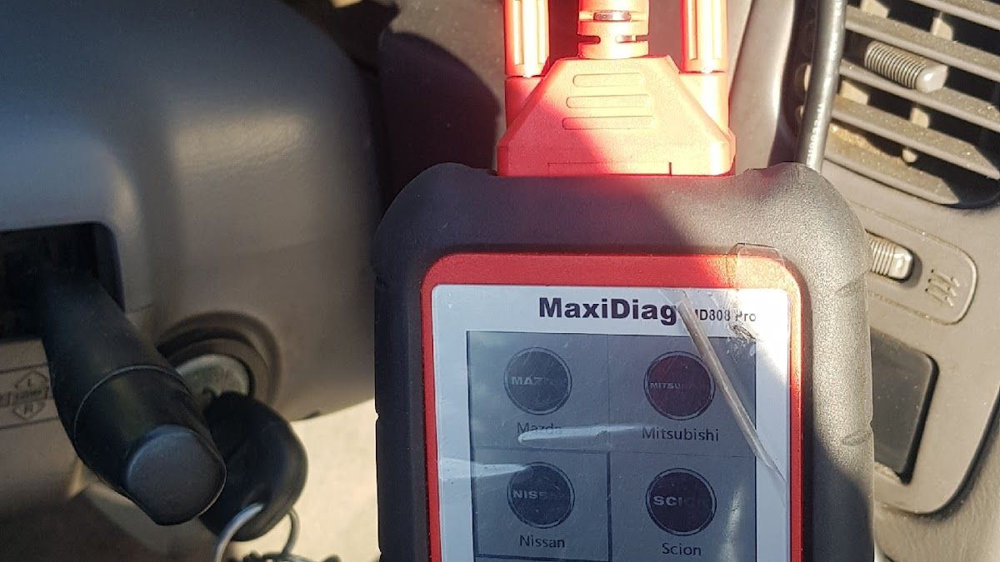
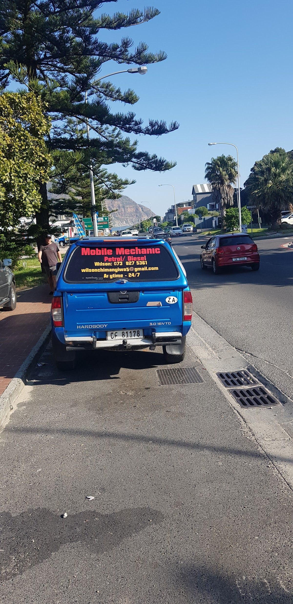

Your go-to mobile mechanic in Hout Bay, ensuring your car runs smoothly.
Contact UsAt Wilson's Auto Mobile Mechanic, we bring exceptional car repair and maintenance services directly to your doorstep, wherever you are in Hout Bay, Cape Town. Our mission is to ensure your vehicle remains in optimal condition, granting you peace of mind on every drive. With our mobile service, convenience and quality are just a call away.
Our passion for cars and dedication to top-tier service inspired the creation of Wilson's Auto Mobile Mechanic. Over the years, we have cultivated a reputation for reliability and excellence, making sure you receive the best care for your vehicle. Your satisfaction is our priority, and we stand by our work with a commitment to honesty, transparency, and superior service.
At Wilson's Auto Mobile Mechanic, we bring expert car care directly to you, ensuring your vehicle stays in top condition without the hassle.
Our skilled mechanics come to you, providing efficient and effective solutions to any mechanical issues your car might have.
We handle everything from minor repairs to major overhauls, ensuring your car is back on the road in no time.
Regular servicing is crucial for your vehicle's longevity. We offer comprehensive service packages tailored to your needs.
Discover how Wilson's Auto Mobile Mechanic keeps our community on the road with confidence and care, straight from our satisfied customers.
"I love google ratings. It keeps people on their toes and honest. I went to Wilson based on his 5 star reviews and I am happy to say I know why. Great service, fair, affordable and reliable. Thank you Wilson!"— Trenton Birch, , ★★★★★
"Thank you for assisting us so promptly with our daughter's car. Great service!"— Katherine Darvall, ★★★★★
"I have been using Wilsons' Auto for years now, he is reliable, trustworthy, defs very reasonably priced and knows what he is doing with cars. Thanks Wilson!"— Tamsin Hall,, ★★★★★
"Very grateful for the amazing and speedy service. Would definitely recommend!"— Leigh, ★★★★★
"Exellent service as always."— GWC, ★★★★★


We'd love to hear from you — reach out to us anytime.